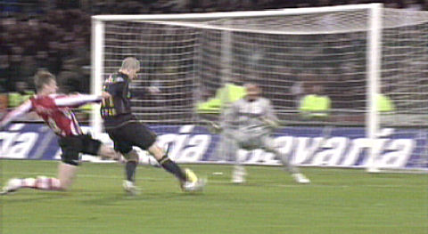

|
PSV - Roda JC (2-4) 7 december 2007
|
Na een eerbetoon aan de twee jaar geleden overleden "meneer Frits" en aan de
doelman Gomes die gesmeekt wordt in Eindhoven te blijven, opent PSV sterk.
De
eerste vijf minuten domineert de ploeg en moet Castro al gauw redding brengen.
Daarna overloopt Roda met gedurfd aanvallend voetbal PSV compleet.
Hier kan
Gomes nog redding brengen.
Hadouir speelt zijn man uit en verzendt een prima pas naar De Fauw die de bal...
...buiten bereik van Gomes in de verre hoek kopt: 0-1, (19').
Aangever en afmaker feliciteren elkaar.
Roda komt met de schrik vrij als een bal op de paal belandt uit een vrije schop
van Farfan.
Meeuwis kapt Zonneveld uit en lepelt de bal over Gomes.
0-2, (45').

Na de rust gaat Roda heersend verder. Oper scoort al snel 0-3, (48').
Dit zijn ze niet gewend in Eindhoven!
(foto: Kelly Litjens)
Nadat Oper zich heeft ontdaan van Rajkovic plaatst hij de bal voor doel die door
de
aanstormende Hadouir wordt ingeschoten: 0-4, (64').
Roda speelt een droomwedstrijd waarin PSV volledig wordt weggespeeld. Het
aantal
doelkansen is niet meer bij te houden.
Toch komt PSV terug door een
frommelgoal van Koevermans uit een voorzet van Afellay: 1-4, (81').
Even later scoort Koevermans opnieuw. Nu met een strak diagonaal schot: 2-4,
(83').
©
Koempels Pleasure Dome
|